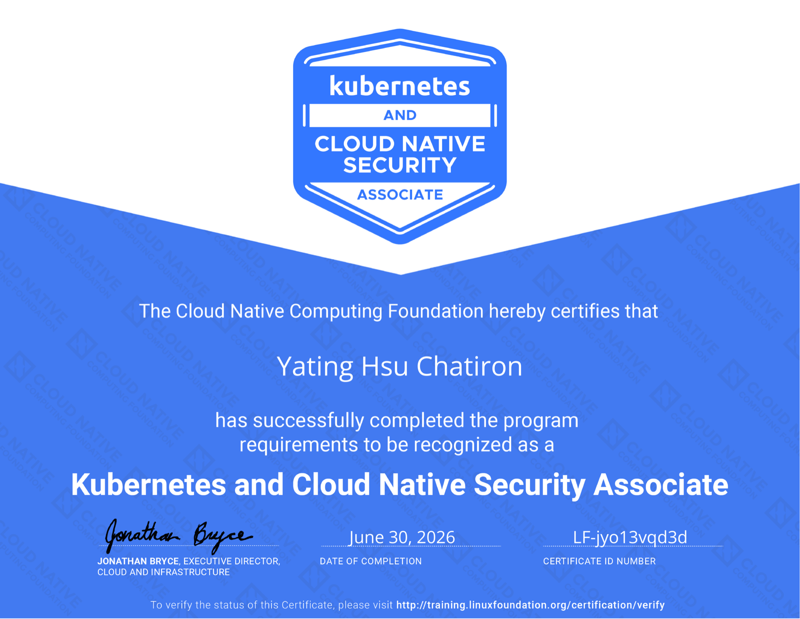
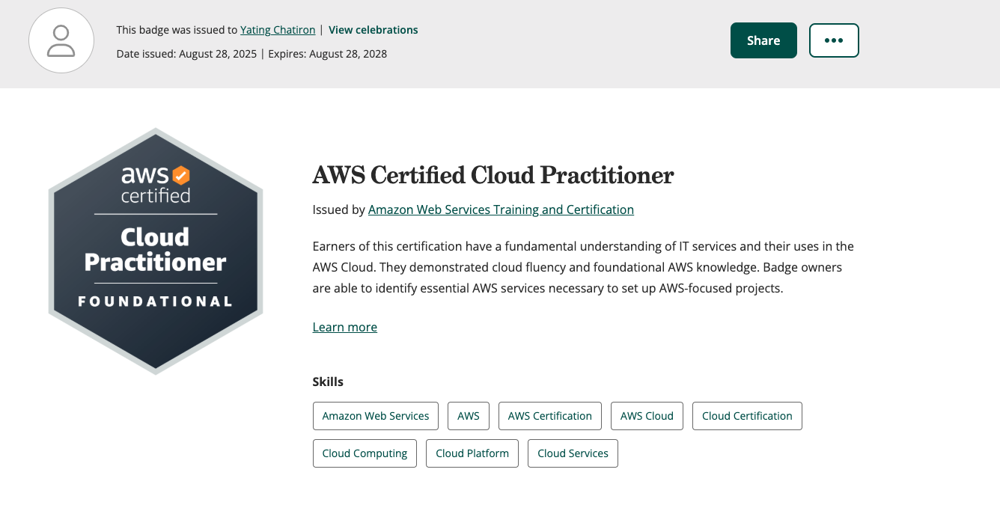
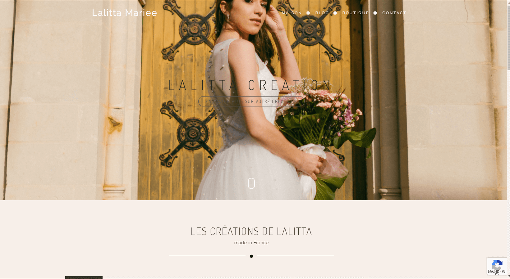
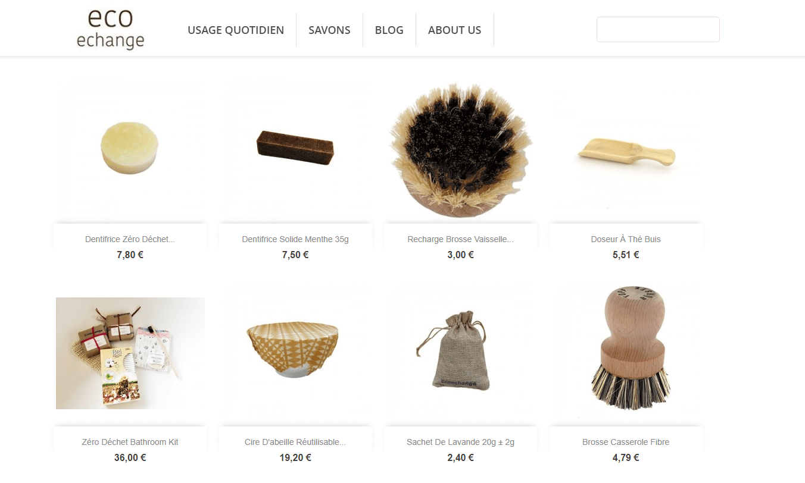
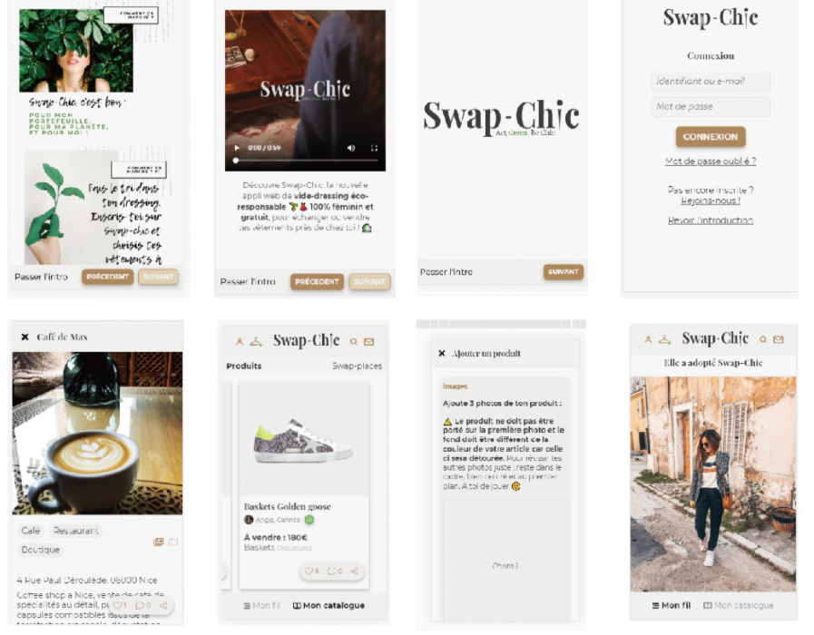
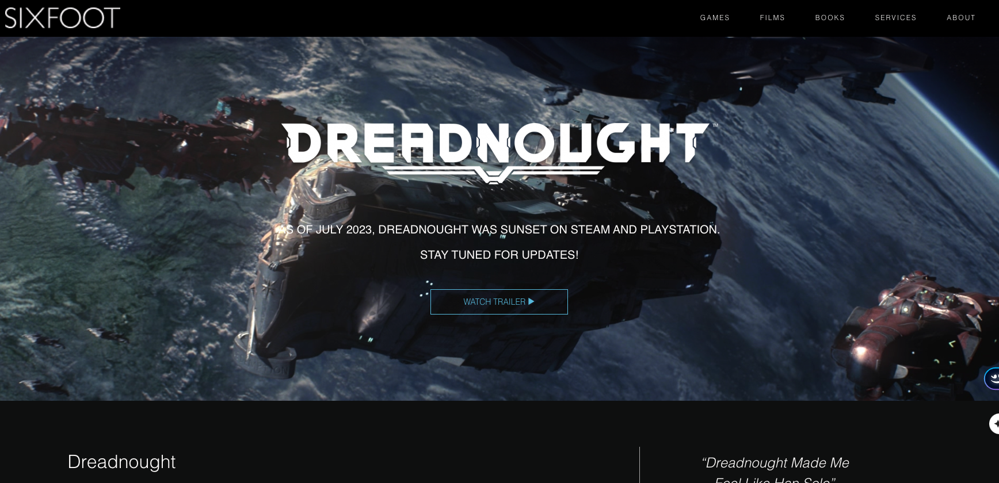

À propos de moi
Ingénieur DevOps & Infrastructure Cloud — Spécialisée E-Santé
Bonjour, je suis Yating Chatiron, ingénieur DevOps senior avec 16+ ans d’expérience en full-stack engineering et infrastructure cloud. Depuis 2022, je me suis spécialisée dans le DevOps et les architectures pour le secteur santé — environnement où la criticité, la conformité et la continuité de service ne laissent aucune place à l’erreur.
Ce que je fais aujourd’hui
Infrastructure as Code | Kubernetes & GitOps | Multi-Cloud (AWS/GCP/Azure)
- ✅ Zéro downtime deployments (Blue/Green, GitOps via ArgoCD)
- ✅ Sécurité en shift-left (Prisma Cloud, Trivy, SBOM scanning)
- ✅ Observabilité critique (Grafana, RabbitMQ alerting N1/N2/N3)
- ✅ Conformité HDS/ISO27001 tout au long du cycle de déploiement
Stack core : Kubernetes · Terraform · Helm · ArgoCD · GitHub Actions · Vault · PostgreSQL · Go/Node.js/Python
Pourquoi la santé ?
En 2023, j’ai découvert que la santé n’est pas "juste" de la tech.
Chaque déploiement affecte directement les médecins, les patients, les décisions médicales. Un incident = une chirurgie reprogrammée, un diagnostic en retard. Cette responsabilité m’a fascinée — et transformée.
- • 5+ ans d’expérience e-santé (Biogroup, ITEKCOM, Livemed’s)
- • Profonde compréhension du domaine (HDS, GDPR, données sensibles, SLA critique)
- • Expertise en coordination transverse entre dev, infra, data, et équipes cliniques
Un parcours atypique (mais logique)
🇹🇼 Taiwan → Design Graphique
🇺🇸 Boston (5 ans) → Full-Stack Engineer (créativité → automation → code)
🇫🇷 France (depuis 2021) → DevOps + Healthcare Infrastructure
Entre ces trois mondes, j’ai accumulé :
- • Adaptabilité extrême (startups, scale-ups, régulation lourde)
- • Multilinguisme (Chinois natif · Anglais · Français · Japonais N1)
- • Vision cross-culturelle appliquée à l’engineering (pas d’une seule "bonne façon")
Ce qui a vraiment changé : réaliser que la vraie complexité n’est pas le code — c’est les enjeux humains, les contraintes métier, la confiance. Le reste c’est des détails.
En construction
Cybersécurité (Certifications : AWS CLF, NRS6092 Pentesting, ISC2)
Je reconnais que la sécurité n’est pas un "ajout" à l’infra — c’est le fondement. D’où mon intérêt croissant pour le pentest et les threat models.
Ce que je cherche
- Piloter l’infrastructure (pas juste déployer)
- Mentorer des junior en DevOps/SRE
- Travailler sur du concret (santé, fintech, données critiques)
- Continuer à apprendre (data platforms, observabilité avancée)
Mission Freelance
En missionTech Lead · Architecture Cloud — Panieer
Smart Locker & LCM · La Réunion · Mission freelance
Consulting architectural pour Panieer — une plateforme de casiers connectés permettant aux commerçants, marketplaces et services de livraison de proposer un retrait autonome de colis à La Réunion.
Mission parallèle — consulting freelance, pas un emploi principal
Je crois à : infra simple, code boring, culture strong, humilité technique.
Expérience
Tech Lead & Ingénieure DevOps – Fortil
Octobre 2025 – En cours
- Référente technique transverse entre les équipes développement, infrastructure et ops sur une plateforme santé multi-applicatifs (28+ sites) ; pilotage des choix d'architecture GitOps, gestion des secrets et stratégie de déploiement.
- Industrialisation d'une chaîne CI/CD GitOps complète (GitHub Actions, Helm, ArgoCD, Vault, Harbor), remplaçant les déploiements manuels et intégrant des scanners de sécurité shift-left (Prisma, Trivy, CVE).
- Résolution de deadlocks RabbitMQ sur une stack multi-composants (Node-RED + Workers + connecteur Go) ; refonte du connecteur Golang avec système de replay et comparaison métier sur ~1M de lignes.
- Migration de données via Jobs Kubernetes réduite de plusieurs heures à moins de 10 minutes ; refonte des cron jobs sur 5 microservices (TypeScript/Next.js), réduisant le temps de traitement de 8h à 1h.
- Mise en place de dashboards et alertes N1/N2/N3 (Grafana, RabbitMQ) sur 28+ sites, remplaçant PRTG par une solution open-source plus flexible.
- Mise en place des normes de codage, revues de code et déploiements Blue/Green avec rollback instantané et backups automatisés.
Tech Lead Architecture Cloud – Panieer (Freelance)
En cours2025 – En cours · Mission freelance
- Consulting en architecture cloud pour Panieer, une startup de casiers intelligents (LCM) permettant le retrait autonome de colis pour les commerçants et services de livraison à La Réunion.
- Accompagnement tech lead : design système, stratégie API, infrastructure cloud (AWS), feuille de route scalabilité et modèle d'intégration B2B.
- Traduction de la vision produit en décisions d'architecture — interface entre stratégie business et exécution technique sur les workflows smart locker.
Mission parallèle freelance — pas un emploi principal
Tech Lead DevOps - Budhapp
Septembre 2024 - Mars 2025
- Développement d'Animalink, une plateforme médicale, avec une infrastructure évolutive sur GCP.
- Intégration de solutions blockchain DeFi, réduisant les coûts de transaction de 25%.
- Automatisation des pipelines CI/CD sur GKE, réduisant le temps de déploiement de 35%.
- Utilisation de l'IA LLM (Claude Sonnet 3.5 & ChatGPT) pour l'automatisation de projets.
Ingénieur R&D - Groupe Itekcom
Juin 2023 - Mai 2024
- Conception de modules de prescription médicale pour des plateformes de commerce électronique en santé.
- Gestion des serveurs HDS sur AWS avec un taux de disponibilité de 99,9%.
- Optimisation de Prestashop, augmentant les ventes de 20%.
Ingénieur Full Stack - Livmed's
Juin 2022 - Mars 2023
- Développement d'un service basé sur WebSocket pour une communication en temps réel dans une application de livraison de médicaments.
- Optimisation des requêtes Google Maps API, réduisant les coûts de 25%.
- Encadrement des stagiaires et établissement des meilleures pratiques de codage.
Certificats

Kubernetes and Cloud Native Security Associate (KCSA) - CNCF/Linux Foundation
30 Juin, 2026

AWS Certified Cloud Practitioner CLF-C02
Aout 28, 2025
CertificateNRS6092 Cyber Sécurité Pentesting
Juillet 31, 2025

ISC2 Certification
April 12, 2025
Cybernin Certification
Mars 27, 2025
Python certificates - Greate Learning
April 30, 2024

Java certificates - Ecole Polytechnique federale de lausanne
June 30, 2012
CS50 Computer Science - Harvard University
April 30, 2012
Compétences
Langages
PHP, Python, JavaScript, Java, HTML, Golang
Frameworks
Symfony, Laravel, React, Angular, ASP.NET
DevOps & CI/CD
Docker, Kubernetes, Terraform, Azure, AWS, GCP, OVH, ArgoCD, GitOps, GitHub Actions, GitLab CI
Monitoring
Prometheus, Grafana, Kafka, Datadog, Zabbix
Bases de données
SQL, MySQL, PostgreSQL, MongoDB, Firebase, GraphQL
Cybersécurité
OWASP, Kali Linux, Metasploit, Burp Suite, Wireshark, Nmap, SSL/TLS, Sécurité API, Pentesting, Sécurité Cloud


Projets passés










